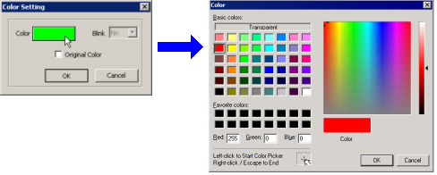

|
|
|
|
|
|
|
|
Free form color animation is used to create color changes based on a range of value changes for a single graphical object. If you have only one object that changes colors based on value ranges, you can create this one graphical object instead of first creating a color resource and then the graphical object.
If you need to use this object in two or three places, you can copy the object. To update all the same objects, you need to update the individually. If you plan on having many occurrences of the same object, we recommend creating a color resource and using the By States mode.

The color palette display differs depending on the Type and TargetColor settings defined in the target's properties.
Double-click on the graphical object to display the Animation Properties dialog box.
From the Mode drop-down list on the Color tab, select Free Form.
The Fore Color, Back Color, and Line Color tabs display the same options. You can set these options as follows:
|
Option |
Description |
|
Enable Color Animation |
Select this check box to use Fore, Back, or Line animation for this object. |
|
Data Type |
Select either BOOL or Integer from the drop-down list. To toggle the color on and off with only two states, select BOOL. To change the color based on more than two integer values, select Integer. |
|
Variable |
Click to display the BOOL or Integer variables. Select a variable from the Expression Editor Pad then click OK. For more information on variables, see Section 6.1, About Variables and Device Addresses. |
|
Value or Value Range |
If you selected BOOL for the Data Type, set the OFF and ON colors for the object. If you selected Integer for the Data Type, set the value ranges for the object. |
|
Color |
The Fore, Back, and Line Colors in Color Animation apply when the variable values are met. Otherwise, the Fore, Back, and Line Colors in the Property Inspector are used.
Click the Color field to open the Color Setting dialog box. In the Color Setting dialog box, click the Color field and select the color you want to use in the Color palette.  If you select the Original Color checkbox, the Color field displays the same color as the Fore, Back, or Line Color of the object. Or click the Transparent box to set the color to transparent. |
Click OK to confirm your settings in the Color palette dialog box, the Color Setting dialog box, and the Animation Properties dialog box.